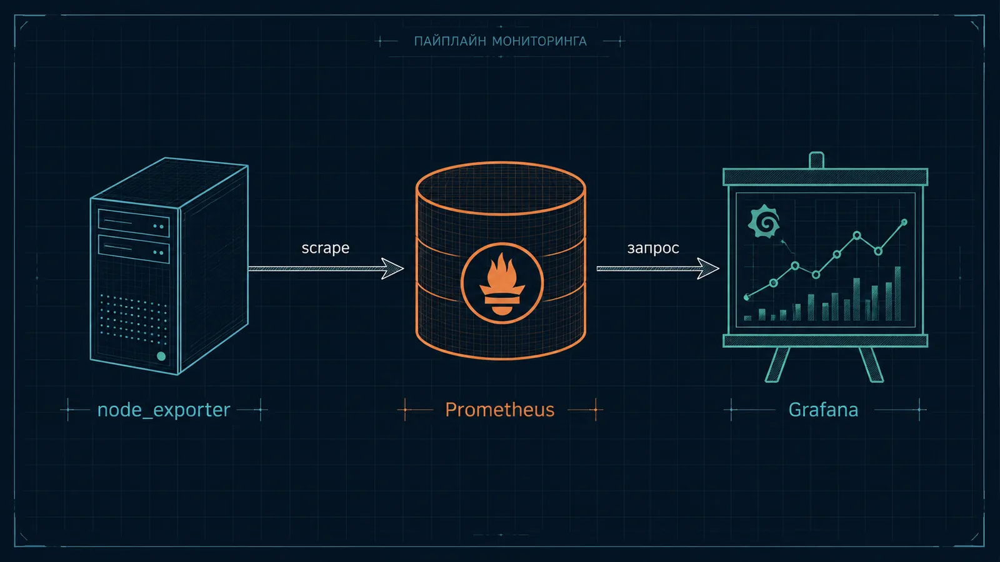
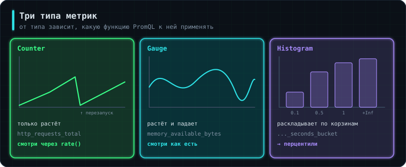
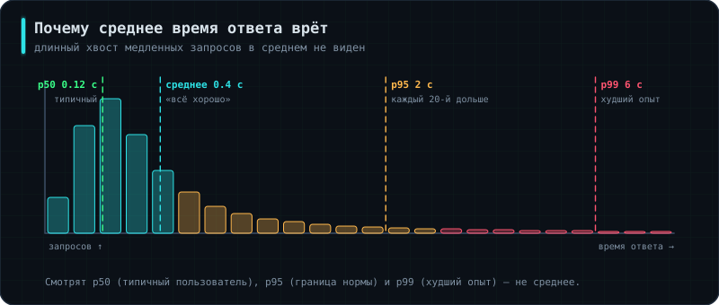
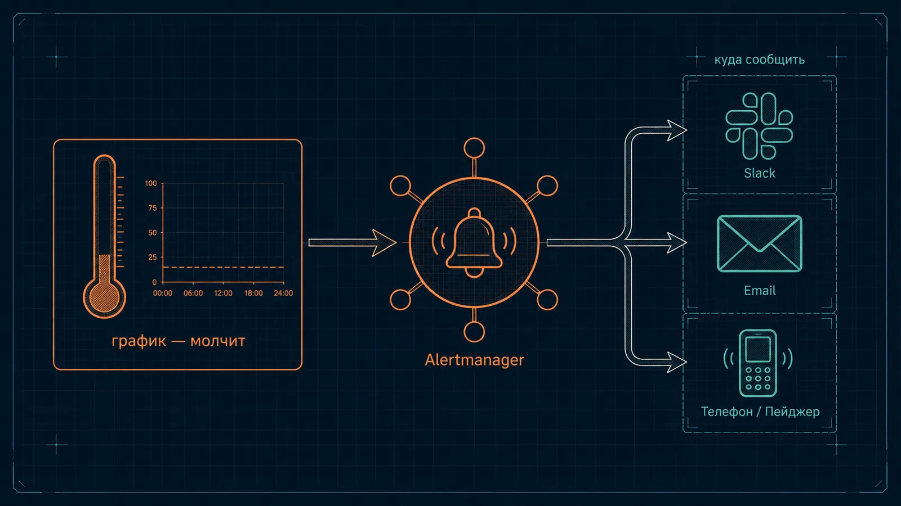
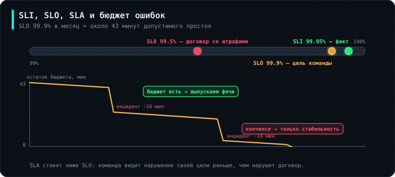
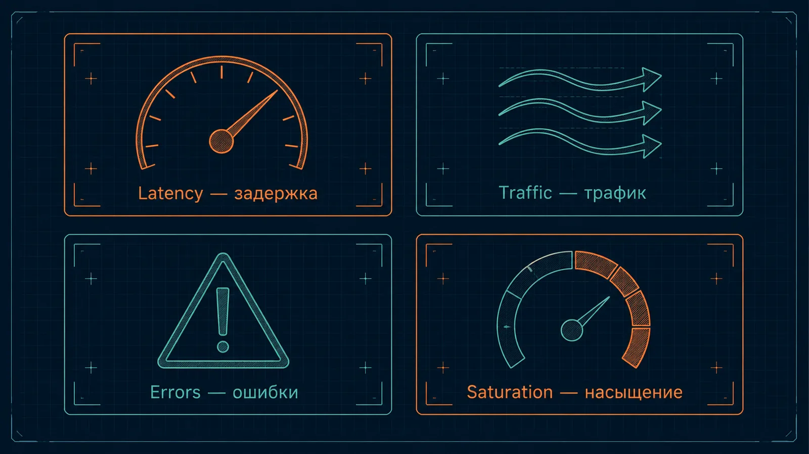
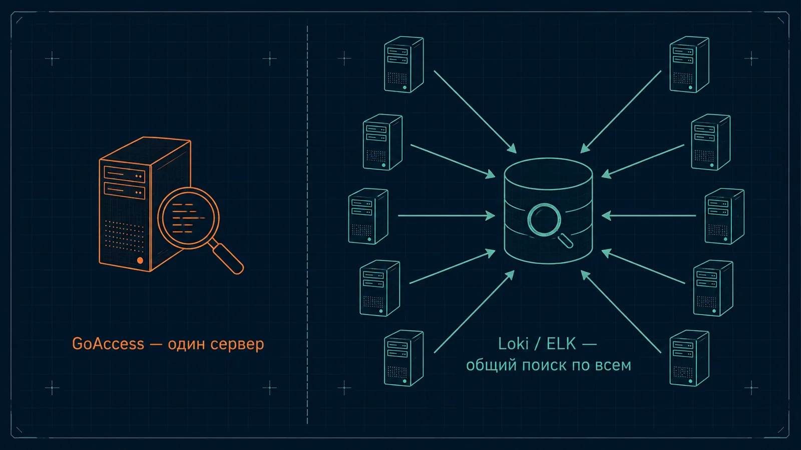

Урок 1.3 Bash научил разово спрашивать систему «как ты себя чувствуешь прямо сейчас» — запустил скрипт, получил ответ. Но сервер может упасть ночью, когда никто не смотрит на экран: разовая проверка тут бесполезна, потому что просто не была запущена в нужный момент. Этот урок — про наблюдение, которое работает само, непрерывно, и умеет сказать человеку «вот сейчас что-то не так».
Здесь есть и повседневные инструменты (разбор логов в терминале, проверка мониторинга искусственной нагрузкой), и то, что спрашивают на собеседованиях — вопрос «как ты мониторишь свои сервисы» гарантирован практически на любом. Три темы отвечают за большую часть таких вопросов: типы метрик (без них PromQL не понять), перцентили (почему среднее время ответа врёт) и SLO с бюджетом ошибок (как «сайт должен работать» превращается в число).
📘Словарик на будущее
Временной ряд (time series) — данные, где к каждому значению приклеена метка времени; важна не просто цифра, а когда именно она зафиксирована.
Экспортер (exporter) — маленькая программа, которая снимает метрики и отдаёт их в формате, понятном Prometheus.
Панель (panel) — один график или число на дашборде. Дашборд — набор панелей на одну тему.
Алерт — автоматическое уведомление «что-то пошло не так», которое само находит человека.
Метка (label) — дополнительная подпись у метрики, например method="GET"; по меткам фильтруют и группируют.
Перцентиль — значение, ниже которого оказалась заданная доля измерений: p95 = 8 с означает «95% запросов уложились в 8 секунд».
Combined log format — стандартный формат строки лога nginx/Apache: IP, дата, метод, URL, код ответа, User-Agent.
// шаг 2/21 · теория · ~1 мин
GoAccess — лог-анализатор в реальном времени
Аналогия: табло с расписанием на вокзале. Можно читать бумажный список поездов построчно, но табло уже посчитало и показало главное. GoAccess делает то же самое с логами сайта: вместо чтения сырого файла строка за строкой сразу видна посчитанная статистика, обновляющаяся на лету.
access.log — путь к файлу логов, куда nginx дописывает строку про каждый запрос. --log-format=COMBINED говорит, в каком формате записаны строки — без этого GoAccess не знает, где искать IP, а где код ответа. -o report.html сохраняет результат в HTML-файл. --real-time-html делает отчёт живым: он продолжает обновляться, пока в лог дописываются новые строки.
// шаг 3/21 · теория · ~2 мин
Базы данных временных рядов и Prometheus

Аналогия: обычная база — шкаф с папками, где хранится текущее состояние: «баланс счёта прямо сейчас — 500 рублей». База временных рядов устроена иначе — это дневник: каждая запись подписана «когда именно», и ценность представляет вся история, а не последняя строчка.
Prometheus — самая популярная база временных рядов, спроектированная под мониторинг. Работает по pull-модели: не ждёт, пока кто-то пришлёт метрики, а сам по расписанию стучится к каждому известному экспортеру и спрашивает текущие значения. Термин для этого — scrape («наскребать»).
# prometheus.yml
global:
scrape_interval: 15s # как часто опрашивать цели
scrape_configs:
- job_name: 'node'
static_configs:
- targets: ['localhost:9100'] # порт node_exporter
scrape_configs — список того, кого опрашивать. job_name — человекочитаемое имя группы целей. targets — конкретные адреса; порт 9100 — стандартный для node_exporter.
💡Pull против push — вопрос на собеседовании
Преимущество pull: Prometheus сам знает, кто должен быть жив, и отсутствие ответа само по себе является сигналом — метрика up становится нулём. В push-модели молчащий сервис неотличим от сервиса, который просто ничего не отправлял. Плюс не нужно настраивать каждое приложение на адрес системы мониторинга.
Где pull не работает: короткоживущие задачи (cron-скрипт отработал 3 секунды и умер — Prometheus просто не успеет его опросить). Для них есть Pushgateway, промежуточный буфер, куда задача сама отправляет результат перед завершением. Пользоваться им стоит только для этого случая: превращать Pushgateway в общий приёмник метрик — известная ошибка, он ломает модель обнаружения мёртвых целей.
⚠️Prometheus — не архив
Он не предназначен для долгого хранения: по умолчанию держит данные около 15 дней и живёт на локальном диске одного сервера. Если нужна история за год или единое хранилище на много кластеров, поверх ставят отдельные решения — Thanos, VictoriaMetrics или Mimir. Знать про это стоит: вопрос «как вы храните метрики дольше месяца» встречается на собеседованиях уровня выше джуна.
// шаг 4/21 · теория · ~2 мин
Типы метрик: counter, gauge, histogram

Аналогия: одометр в машине только растёт и показывает общий пробег. Спидометр показывает текущую скорость и скачет вверх-вниз. А журнал поездок, разложенный по длительности, позволяет сказать «90% поездок были короче получаса». Это три разных типа измерений, и путать их нельзя.
Counter — счётчик, который только растёт и обнуляется при перезапуске процесса. Примеры: http_requests_total, node_network_receive_bytes_total. Суффикс _total — общепринятая пометка счётчика.
Gauge — величина, которая свободно растёт и падает. Примеры: node_memory_MemAvailable_bytes, node_filesystem_avail_bytes, количество активных соединений.
Histogram — раскладывает наблюдения по корзинам («сколько запросов уложилось в 0.1 с, сколько в 0.5 с, сколько в 1 с»). Из него потом считают перцентили. Пример: http_request_duration_seconds_bucket.
Практическое следствие, ради которого это и разбирается:
http_requests_total # ✘ бесполезно: «17 483 921 запрос с момента запуска»
rate(http_requests_total[5m]) # ✔ осмысленно: запросов в секунду
rate(node_memory_MemAvailable_bytes[5m]) # ✘ бессмыслица: rate к gauge
Счётчик никогда не смотрят напрямую — из накопленного за месяц числа ничего не следует. Его оборачивают в rate(), получая скорость. И наоборот: применять rate() к gauge бессмысленно — там и так текущее значение.
Проверить тип можно прямо в выводе экспортера: перед каждой метрикой экспортер печатает служебную строку # TYPE имя_метрики counter.
// шаг 5/21 · теория · ~2 мин
PromQL — язык запросов Prometheus
Аналогия: PromQL — способ задать Prometheus вопрос на его родном языке, вместо того чтобы листать накопленные цифры глазами.
rate(http_requests_total[5m]) # запросов в секунду
sum(rate(http_requests_total[5m])) by (status) # то же, с разбивкой по коду
100 - (avg(rate(node_cpu_seconds_total{mode="idle"}[5m])) * 100) # % занятости CPU
histogram_quantile(0.95, sum(rate(http_request_duration_seconds_bucket[5m])) by (le))
rate(...[5m]) берёт счётчик, смотрит, на сколько он вырос за 5 минут, и делит прирост на число секунд — получается «в секунду». Эту конструкцию стоит запомнить целиком: она есть практически в любом реальном дашборде.
Фигурные скобки — фильтр по меткам. У node_cpu_seconds_total метка mode бывает idle, user, system; фильтр оставляет только время простоя, а вычитание из 100 даёт занятость.
sum(...) by (status) группирует результат: вместо одной линии получаются отдельные линии по каждому коду ответа. Обратная операция — without, «сложить всё, игнорируя эту метку».
Последняя строка считает 95-й перцентиль времени ответа из гистограммы. le (less or equal) — служебная метка корзин, по ней и раскладываются значения; её обязательно нужно сохранить в by, иначе histogram_quantile не сработает.
💡rate или irate
rate() усредняет по всему указанному окну и даёт сглаженную картину — это то, что нужно почти всегда, особенно для алертов. irate() считает по двум последним точкам и реагирует резко — полезно для отладки коротких всплесков, но в алертах даёт ложные срабатывания. Ещё есть increase() — тот же rate, но не в секунду, а «на сколько всего выросло за окно»; удобно читается в тексте алерта.
// шаг 6/21 · теория · ~1 мин
Перцентили: почему среднее время ответа врёт

Аналогия: средняя зарплата в компании, где один директор и девять стажёров, ничего не говорит о зарплате стажёра.
Типичная картина: дашборд показывает среднее время ответа 180 мс, все довольны, а поддержка получает жалобы «сайт висит». Причина в том, что среднее сминает распределение: масса быстрых ответов тянет его вниз, и медленные 5% в нём растворяются.
Перцентиль отвечает на честный вопрос. p95 = 8 с читается как «95% запросов уложились в 8 секунд, а каждый двадцатый ждал дольше». Именно эти 5% и пишут в поддержку.
На практике смотрят p50 (медиана — типичный пользователь), p95 (граница нормы) и p99 (худший опыт). Мониторить только среднее — распространённая ошибка, и на собеседовании вопрос «почему нельзя смотреть на среднее время ответа» проверяет именно это понимание.
histogram_quantile(0.50, sum(rate(http_request_duration_seconds_bucket[5m])) by (le))
histogram_quantile(0.95, sum(rate(http_request_duration_seconds_bucket[5m])) by (le))
histogram_quantile(0.99, sum(rate(http_request_duration_seconds_bucket[5m])) by (le))
// шаг 7/21 · теория · ~1 мин
Кардинальность — как убить свой Prometheus
Аналогия: картотека, где на каждого посетителя заводится отдельный ящик. Пока посетителей сотня — удобно. Когда их миллион, картотека занимает весь этаж и в ней невозможно ничего найти.
Prometheus хранит отдельный временной ряд на каждую уникальную комбинацию меток. Метрика с меткой method (3 значения) и status (5 значений) — это 15 рядов, нормально. Но если добавить метку с идентификатором пользователя или запроса, рядов станет столько же, сколько пользователей, и хранилище распухнет до полной неработоспособности.
Правило: в метки идёт только то, у чего мало возможных значений — метод, код ответа, имя сервиса, окружение. Идентификаторы пользователей, сессий, запросов, полные URL с параметрами и сообщения об ошибках в метки не кладут никогда. Для таких данных существуют логи (4.5 Наблюдаемость и раздел 12 ниже), а не метрики.
⚠️Симптомы, которые стоит узнавать
Prometheus начал отъедать десятки гигабайт памяти, запросы стали выполняться минутами, в логе появились sample limit exceeded — почти всегда причина именно во взрыве кардинальности, а не в объёме трафика. Проверить: topk(10, count by (__name__)({__name__=~".+"})) покажет метрики с наибольшим числом рядов.
// шаг 8/21 · теория · ~1 мин
Grafana — панели и дашборды
Аналогия: если Prometheus — дневник с цифрами и датами, то Grafana — художник, который рисует по нему графики.
Grafana сама ничего не хранит и не собирает — она подключается к источникам данных (чаще всего к Prometheus) и визуализирует то, что там уже есть. Без источника метрик у неё просто нет данных.
💡Не обязательно рисовать самому
Сообщество собрало огромное количество готовых дашбордов под популярные экспортеры — например, «Node Exporter Full» показывает всё важное о сервере сразу после установки. Такие дашборды импортируют по числовому ID прямо в интерфейсе. Именно так поступают в подавляющем большинстве случаев, а не собирают панели с нуля.
Полезное про эксплуатацию Grafana: дашборды стоит хранить как код (JSON в репозитории), а не только кликать в интерфейсе — иначе при переезде или сбое вся работа теряется. Это же позволяет ревьюить изменения дашбордов через merge request, как обычный код.
// шаг 9/21 · теория · ~2 мин
Alertmanager — когда смотреть на график уже недостаточно

Аналогия: график — термометр: молча показывает температуру, и если никто не смотрит именно в тот момент, когда она подскочила, никто и не узнает. Alertmanager — тот, кто берёт трубку и звонит врачу.
Важно различать две ответственности: правило («когда считать, что что-то не так») задаётся в конфигурации Prometheus, а куда отправить уведомление — в Slack, Telegram, дежурному по расписанию — настраивается в Alertmanager, отдельном компоненте.
# alert.rules.yml
groups:
- name: example
rules:
- alert: HighCPU
expr: 100 - (avg(rate(node_cpu_seconds_total{mode="idle"}[5m])) * 100) > 90
for: 5m
labels:
severity: warning
annotations:
summary: "CPU выше 90% дольше 5 минут на {{ $labels.instance }}"
runbook: "https://wiki.company/runbooks/high-cpu"
alert — имя правила. expr — PromQL-условие, которое Prometheus пересчитывает регулярно. labels: severity — метка важности, по которой Alertmanager решает, будить ли дежурного ночью. annotations — человекочитаемый текст уведомления.
Поле for: 5m — самая важная деталь: условие должно оставаться истинным непрерывно 5 минут, и только тогда алерт сработает. Это защищает от ложных тревог на кратковременные всплески.
Поле runbook — ссылка на инструкцию «что делать, когда это сработало». Строго говоря, оно необязательное, но именно оно превращает алерт из «пищит непонятно что» в задачу, которую может выполнить любой дежурный. Наличие runbook-ссылок в алертах — заметный признак зрелой команды, и упомянуть это на собеседовании стоит.
⚠️Alert fatigue — усталость от алертов
Если настроить алерты на всё подряд, дежурный быстро начнёт машинально их игнорировать («опять эта штука пищит, наверное, ерунда»). Эффект называется alert fatigue, и он опасен: среди множества ложных тревог однажды затеряется настоящая.
Критерий простой: алерт должен требовать немедленного действия живого человека прямо сейчас. Всё, что просто любопытно посмотреть, рисуют на дашборде без уведомления. Хороший вопрос к каждому алерту: «что конкретно человек сделает, получив его в три часа ночи?» Если ответа нет — это не алерт.
▶ схемаПопробуй сама: путь от метрики до алерта
Интерактивная схема загружается…
// шаг 10/21 · теория · ~1 мин
SLI, SLO и бюджет ошибок

Аналогия: «машина должна ездить хорошо» — не требование. «Расход не выше 8 литров на сотню» — требование, потому что его можно измерить и проверить.
Три термина, которые превращают расплывчатое «сайт должен работать» в число:
SLI (Service Level Indicator) — сам измеряемый показатель: доля успешных ответов, время отклика, доступность.
SLO (Service Level Objective) — внутренняя цель по этому показателю: «доступность не ниже 99.9% за календарный месяц».
SLA (Service Level Agreement) — обещание клиенту, закреплённое договором со штрафами. Его всегда ставят ниже SLO, чтобы был запас: сначала команда нарушит свою цель и увидит это, и только потом дойдёт до нарушения обязательств.
Бюджет ошибок (error budget) — то, ради чего вся конструкция и нужна. Если SLO 99.9% в месяц, то 0.1% — это примерно 43 минуты допустимого простоя. Это не «плохо», это разрешённый ресурс, который можно тратить осознанно.
Полезные ориентиры, которые стоит помнить: 99% — около 7 часов в месяц, 99.9% — около 43 минут, 99.99% — около 4 минут. Разница между «три девятки» и «четыре девятки» на словах кажется мелочью, а на деле это разница в стоимости инфраструктуры в разы.
Логика применения бюджета:
бюджет есть — можно рисковать: катить релизы чаще, экспериментировать, ускоряться;
бюджет исчерпан — новые функции замораживаются, команда занимается надёжностью, пока не восстановится.
Это снимает вечный спор «разработка хочет быстрее, эксплуатация хочет стабильнее»: спор заменяется числом, за которым обе стороны следят вместе.
// шаг 11/21 · теория · ~1 мин
Golden signals — что реально стоит мониторить

Аналогия: вместо того чтобы следить за каждой цифрой и утонуть в десятках графиков, договорились смотреть на четыре показателя — этого почти всегда достаточно, чтобы понять, здоров сервис или нет.
Latency (задержка) — сколько занимает ответ. Смотреть по перцентилям, а не по среднему (§5). Отдельно стоит считать задержку успешных и неуспешных запросов: быстро возвращаемая ошибка иначе улучшает картину.
Traffic (трафик) — сколько запросов приходит в единицу времени. Сам по себе не проблема, но нужен как контекст для остальных.
Errors (ошибки) — доля запросов, закончившихся ошибкой. Именно доля, а не абсолютное число: сто ошибок на миллион запросов и сто на тысячу — разные ситуации.
Saturation (насыщение) — насколько ресурс подошёл к своему пределу. Предупреждение о проблеме до того, как она случилась.
💡Готовый каркас ответа
Это «четыре золотых сигнала» из книги Google по SRE, давно ставшие стандартной темой на собеседованиях. Вопрос «что бы ты в первую очередь начал мониторить у нового сервиса» ожидает в ответ именно этот список. Сильный ответ добавляет к нему две вещи: измерять latency по перцентилям и алертить на симптомы, которые чувствует пользователь, а не на внутренние причины вроде загрузки CPU.
// шаг 12/21 · теория · ~3 мин
Экспортеры и нагрузочное тестирование
Аналогия: node_exporter — медсестра, которая обходит палату, снимает базовые показатели и записывает в карту. Врач (Prometheus) забирает готовую карту по запросу, а не измеряет всё сам.
./node_exporter &
curl localhost:9100/metrics | head
Экспортер слушает порт 9100 и по обычному HTTP-запросу отдаёт текущие метрики простым текстом — никакого особого протокола, поэтому curl и работает.
Второй экспортер, который стоит знать, — blackbox_exporter. Он проверяет сервис снаружи, как это делает пользователь: отвечает ли URL, какой код возвращает, сколько занял ответ и — что особенно полезно — сколько дней осталось до истечения TLS-сертификата. Это прямое продолжение разговора о сертификатах из 1.2 Сети, §3: вопрос «как вы следите за сроками сертификатов» получает наконец конкретный ответ.
probe_success == 0 # сайт не отвечает
(probe_ssl_earliest_cert_expiry - time()) / 86400 < 14 # сертификат истекает через 2 недели
Разница между двумя видами проверок важна: node_exporter меряет изнутри («сервер жив, память в порядке»), blackbox — снаружи («пользователь может открыть сайт»). Мониторинг только изнутри пропускает целые классы аварий вроде сломанного DNS или закрытого файрволом порта.
Искусственная нагрузка, чтобы проверить, как ведут себя алерты:
sudo apt install -y stress-ng
stress-ng --cpu 2 --timeout 120s # нагрузить два ядра на 2 минуты
stress-ng --vm 1 --vm-bytes 75% --timeout 120s # занять 75% доступной памяти
stress-ng --hdd 1 --timeout 60s # нагрузить диск записью
--cpu 2 запускает два процесса, загружающих процессор; --vm 1 --vm-bytes 75% — процесс, который держит три четверти доступной памяти; --hdd 1 — процесс, который постоянно пишет на диск; --timeout — время, после которого всё вернётся в норму. Смысл не в самой нагрузке, а в проверке цепочки: график в Grafana пошёл вверх → алерт перешёл в pending → через время из for пришло уведомление → после окончания нагрузки пришло resolved. Алерт, который ни разу не срабатывал на учебной нагрузке, нельзя считать работающим. Для сетевой нагрузки между машинами — знакомый по 1.2 Сетиiperf3.
// шаг 13/21 · теория · ~1 мин
Когда одного GoAccess мало — Loki и ELK

Аналогия: GoAccess отлично читает дневник одного человека. Но если дневников сотни — по одному на сервер — нужен способ собрать их в общую библиотеку с единым поиском.
ELK / Elastic Stack (Elasticsearch + Logstash + Kibana) — тяжеловесное решение, требующее ресурсов, но дающее мощный полнотекстовый поиск по любому слову внутри логов.
Loki (от авторов Grafana) — заметно легче, спроектирован в паре с Grafana: логи и метрики смотрятся в одном интерфейсе. Индексирует не текст, а только метки, поэтому дешевле в хранении.
Ключевое разделение обязанностей, которое стоит усвоить: метрики отвечают на вопрос «что сломалось», логи — «почему». По метрикам видно, что доля ошибок выросла в 14:32; по логам находится конкретное исключение, которое эти ошибки вызвало. Именно поэтому в метки метрик не кладут детали (§6) — детали живут в логах.
💡Что чаще встречается в вакансиях
Связка Prometheus + Grafana + Loki сейчас чаще всего фигурирует как единый стек наблюдаемости (observability). GoAccess хорош для быстрого взгляда на один сервер, но в командах почти наверняка встретится эта тройка. Третий элемент наблюдаемости, о котором стоит хотя бы знать, — трассировки (tracing, инструменты Jaeger и Tempo): они показывают путь одного запроса через десяток микросервисов и отвечают на вопрос «на каком именно шаге ушло время».
// шаг 14/21 · теория · ~3 мин
Учебные аварии: заполнить диск и иноды
Аналогия: пожарные учения. Сигнализацию проверяют не дожидаясь пожара: устраивают дым в безопасных условиях и смотрят, сработала ли она и знают ли люди, что делать.
Алерт на заполнение диска нужно хотя бы раз увидеть сработавшим. Для этого место занимают специально — быстро и так, чтобы потом легко убрать:
fallocate -l 5G /var/tmp/drill-fill # мгновенно занять 5 ГБ
df -h /var/tmp # убедиться, что место ушло
rm /var/tmp/drill-fill # вернуть всё как было
fallocate резервирует место под файл, не записывая данных, поэтому работает за доли секунды. Старый способ — dd if=/dev/zero of=файл bs=1M count=5120: он реально пишет 5 ГБ нулей и занимает минуты. if=/dev/zero — источник бесконечных нулевых байтов (противоположность /dev/null, который всё поглощает), bs — размер блока, count — сколько блоков.
Вторая учебная авария — кончились иноды (1.1 Linux, §15): места много, а файлы не создаются. Её устраивают, создавая очень много крошечных файлов:
mkdir -p /var/tmp/drill-inodes
free_kb=$(df --output=avail /var/tmp | tail -1)
if [ "$free_kb" -lt 1048576 ]; then # меньше 1 ГБ — не рискуем
echo "Свободного места мало — учения отменены" >&2; exit 1
fi
for i in $(seq 1 200000); do : > "/var/tmp/drill-inodes/f$i"; done
df -i /var/tmp # процент занятых инодов вырос
rm -rf /var/tmp/drill-inodes
Перед учениями — защитная привычка: проверить, что места достаточно и учения не положат настоящий сервис. df --output=avail печатает только столбец со свободным местом, tail -1 откидывает заголовок, -lt — числовое «меньше чем»; 1048576 килобайт — ровно 1 ГБ. : > файл создаёт пустой файл быстрее, чем touch, потому что не запускает отдельную программу.
⚠️Учения — только на стенде
На продакшене заполнять диск нельзя даже «на минутку»: база данных, которой не хватило места для записи, может повредить свои файлы. Учебные аварии устраивают на тестовой машине, а на продакшене проверяют алерты через тестовое правило с заведомо низким порогом.
// шаг 15/21 · теория · ~2 мин
Уборка: политики хранения
Аналогия: правила архива: документы хранятся определённый срок, из ежедневных копий оставляют последние семь, а временные черновики выбрасывают в конце дня.
Когда сработал алерт на диск, удалять «что-нибудь большое» руками — плохая идея. Уборка должна идти по заранее заданным правилам и сама, по расписанию. Три типовые политики:
# 1. По возрасту: временные файлы и старые архивы логов
find /var/tmp -type f -mtime +7 -delete
find /var/log/myapp -name "*.gz" -mtime +30 -delete
# 2. По количеству: из бэкапов оставить семь самых свежих
ls -1t /backup/db-*.dump | tail -n +8 | xargs -r rm --
# 3. По времени события: убрать всё, что создано за время учений
find /var/tmp -newermt "2026-10-26 14:00" ! -newermt "2026-10-26 15:00" -print
-mtime +7 — изменённые больше семи дней назад, -delete удаляет найденное сразу.
Во второй строке ls -1t перечисляет файлы по одному в строке, самые новые сверху; tail -n +8 пропускает первые семь строк и выдаёт всё, начиная с восьмой; xargs -r rm -- удаляет переданные файлы, а -r не запускает rm вовсе, если удалять нечего. Двойной дефис -- защищает от имён, начинающихся с -.
В третьей -newermt "дата" означает «изменён позже указанной даты», а ! перед вторым условием — логическое «НЕ». Вместе читается как «позже 14:00, но не позже 15:00». Здесь стоит -print вместо -delete — о причине ниже.
Для больших объёмов find ... -exec rm {} + с + в конце быстрее, чем с \;: find соберёт пачку путей и передаст их одной команде rm, вместо запуска отдельного процесса на каждый файл.
🛑Проверяй перед удалением
Любую конструкцию с find ... -delete или -exec rm сначала запускают без удаления — просто посмотреть список. Замени -delete на -print или убери -exec, убедись, что в выводе именно то, что ожидалось, и только потом добавляй удаление. Ошибка в маске или лишний пробел в пути превращают эту команду в очень эффективный способ потерять данные.
// шаг 16/21 · теория · ~3 мин
Разбор логов nginx в терминале
Аналогия: GoAccess и Grafana — готовые отчёты, а awk по логу — умение самой задать любой вопрос журналу посещений, когда под рукой только SSH.
Чтобы было что разбирать на учебном стенде, достаточно погонять запросы к своему nginx: hey -n 2000 http://localhost/ для обычных запросов и несколько curl на несуществующие страницы для ошибок 404.
Строка в формате Combined. Слева направо: IP посетителя; два дефиса — служебные поля, обычно пустые; дата и время в квадратных скобках; в кавычках строка запроса — метод, путь, версия протокола; 200 — код ответа (1.2 Сети, §2); 512 — размер ответа в байтах; реферер (откуда пришли, тут пусто); User-Agent.
awk '{print $9}' access.log | sort | uniq -c # сколько раз какой код ответа
awk '{print $1}' access.log | sort -u # уникальные IP
awk '$9 ~ /^[45]/' access.log # только ошибки 4xx/5xx
awk '{print $1}' access.log | sort | uniq -c | sort -rn | head # топ активных адресов
awk делит строку на столбцы по пробелам. Девятое слово ($9) — код ответа. sort собирает одинаковые значения подряд (обязательное условие для следующего шага), uniq -c схлопывает повторы и подписывает количество.
Конструкция $9 ~ /^[45]/ фильтрует строки по регулярному выражению: ~ — оператор сравнения с регуляркой внутри awk, ^[45] — «начинается с 4 или 5». Так из огромного лога быстро выцепляются только проблемные запросы.
Последняя строка — готовый рецепт для разбора инцидента: топ адресов по числу запросов сразу показывает, был ли всплеск вызван одним источником.
Во второй строке substr($4, 14, 5) вырезает из поля с датой [26/Oct/2026:14:32:10 пять символов, начиная с четырнадцатого, — время до минут. Получается гистограмма нагрузки по минутам прямо в терминале.
▶ схемаПопробуй сама: собери конвейер команд по звену
Интерактивная схема загружается…
// шаг 17/21 · итоги · ~1 мин
Если запомнить только главное
Prometheus сам опрашивает экспортеры по расписанию (pull-модель); отсутствие ответа само по себе сигнал — метрика up уходит в ноль.
Три типа метрик: counter только растёт (смотреть через rate()), gauge гуляет вверх-вниз, histogram раскладывает по корзинам для перцентилей.
rate(metric[5m]) — самая частая конструкция PromQL. irate для отладки всплесков, в алертах — rate.
Среднее время ответа врёт: смотреть p50/p95/p99, потому что жалуются именно те 5%, что в среднем растворились.
Кардинальность: в метки идёт только то, у чего мало значений. Идентификаторы и полные URL в метках убивают Prometheus.
Grafana ничего не хранит, только рисует; дашборды держат как код в репозитории.
for: 5m в алерте защищает от ложных тревог. Алерт должен требовать немедленного действия человека — иначе это дашборд, а не алерт.
SLI — что меряем, SLO — наша цель, SLA — обещание клиенту (ставится ниже SLO). Бюджет ошибок при 99.9% — около 43 минут в месяц.
4 golden signals: latency, traffic, errors, saturation — ожидаемый каркас ответа на «что мониторить».
node_exporter меряет изнутри, blackbox_exporter — снаружи, включая срок TLS-сертификата.
Метрики отвечают «что сломалось», логи — «почему». На масштабе логи собирают в Loki или ELK.
Перед find ... -delete всегда сначала запуск с -print.
// шаг 18/21 · практика
Практика
Задания делаются на своей машине или в облаке. Отметь задание, когда выполнила проверку из его описания, — за каждое начисляется опыт.
💡В портфолио
Задания 2, 5 и 6 (Prometheus, Grafana, первый алерт, SLO) — раздел «Мониторинг» в P2.
Алерт из задания 5 можно сразу отправлять через своего бота из M3.
Задание 1 — разбор логов nginx
Погоняй трафик на свой nginx: hey -n 2000 http://localhost/, плюс пару сотен запросов на несуществующие адреса и на несколько разных страниц. Через awk, sort, uniq выведи: число запросов по кодам ответа, топ-10 адресов страниц, запросы с ошибками 4xx/5xx, нагрузку по минутам. Проверка: те же цифры показывает GoAccess (goaccess /var/log/nginx/access.log --log-format=COMBINED).
Задание 2 — Prometheus и Grafana
Поставь Prometheus, node_exporter и Grafana. Сделай дашборд: CPU, свободная память, свободное место, дисковые операции. Проверка: под нагрузкой stress-ng --cpu 2 --vm 1 --vm-bytes 1G --timeout 120s графики реагируют.
Задание 3 — PromQL
Напиши запросы: доля свободного места в процентах по каждой точке монтирования; загрузка CPU в процентах за 5 минут; скорость входящего трафика по интерфейсам. Проверка: значения совпадают с df -h, top и ip -s link в пределах погрешности.
Задание 4 — перцентили
Запусти простой сервис, который отвечает со случайной задержкой (90% быстро, 10% медленно). Нагрузи его через hey и построй среднее, p50, p95 и p99. Проверка: объясняешь на своих данных, почему среднее выглядит хорошо, а p99 — плохо.
Задание 5 — первый алерт
Настрой Alertmanager и правило «свободного места меньше 15% в течение 5 минут». Заполни диск через fallocate. Проверка: алерт проходит путь inactive → pending → firing, уведомление приходит, после удаления файла — resolved.
Задание 6 — SLO на бумаге
Сформулируй SLI и SLO для своего учебного сервиса. Посчитай бюджет ошибок в минутах на месяц. Проверка: SLI выражен PromQL-запросом, бюджет посчитан для 99%, 99.9% и 99.99%.